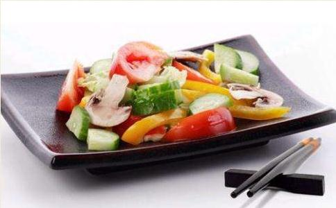

现在全世界吃素的人口很多，素食成了现代饮食的新趋势。素食餐饮越开越多，越开越豪华，菜色也越来越精彩。可是却有人说：「你们吃素的人，心都不是很好」。这种说法太牵强，也可说是各人不同际遇下，一种以偏概全的说法。若说吃素的人心不是很好，那是指只有吃素食却没有在修行、没有转变烦恼习气、没有放下他的贪瞋痴的人。
每个人遇到的人事环境、因缘不同，现代吃素的人，不一定都是有宗教信仰，有的可能是为了健康、为了环保、或是为了爱心，也就是不忍心吃众生肉，人人都有他的原因。当然，只要肯吃素，功德都是非常大，都有含摄到利益众生，这福报就在你持守吃素不杀生当中。素食不单是对身体有益；在佛门，吃素叫吃斋，「斋」这个字的意思就是「洗心」，把心洗清净了这叫斋，一般吃素的人在饮食当中，并没有含摄修身的道理在其中，佛门在日常饮食当中，加入了戒律，叫「斋戒」。因为加入了佛教修行的道理，所以在吃素的时候，就能够发挥洗心的作用。佛门的素食，跟一般人说的健康素食不一样，佛教不吃五辛。不吃五辛就含有修行的义趣在饮食当中，就是在吃素的同时，还持着戒，持戒一般是持五戒，或是在六斋日、十斋日、佛菩萨圣诞的时候，受持八关斋戒。八关斋的功德相当大，也就是在家人过一天出家人的生活。
「八关斋戒」就是把五戒的不邪淫改为不淫欲，后面再加入三条，第六条就是「不着香花鬘、不香油涂身、不歌舞倡伎、不故往观听」。这一天就朴素、清净的过，不要有使心放逸、散乱的活动，让自己的心在这一天当中，能够真正的清净下来。这是第六条。第七条是「不坐卧高广大床」。床，在以前叫「胡几」，也就是椅子，是现在看到的「罗汉椅」。这罗汉椅很大，可以坐可以躺，这会使人心生懈怠、懒散、多妄念。这是提醒大众在这一天当中，都不要懈怠要精进。床就是指睡觉的床，这床在佛门是有要求的，就是床的高度，不能高过于膝盖，宽度当然是以一个人为限，这个床就小小的，不能是双人床的尺寸。「不坐卧高广大床」，大于规定的尺寸，既不坐也不要卧，「不卧」就是不躺在上面睡觉或休息。第八是「不非时食」。不非时食就是「过午不食」，跟「日中一食」不一样，「日中一食」是指太阳在中午的时候才吃；「过午不食」是过了中午之后不吃，也就是晚上不吃。同修有持「不非时食戒」的，也不要想自己今天过午不食，那中午以前就多吃一点，或是大吃特吃，把胃吃坏了那就不对。这样对你的身、心都不是很健康。那持「过午不食」，要到什么时候才可以开始吃呢？必须到第二天早上天亮的时候。「天亮」就是你的手掌纹在不开灯的状况下，可以看得清楚，这就算是天亮，这时候就可以开始进食了。也就是持斋当天从早餐吃过后，中餐在午前用完，晚餐不吃。基本上才一餐，不吃不会伤肠胃，反而有益于身心的健康。
大家可能会问：为什么要过午不食呢？佛告诉我们：早上是天人吃饭的时间，中午是人道用餐的时间，晚上则是饿鬼道吃饭的时间。有一些饿鬼没有福报，所以没饭吃，尤其饿鬼道里，有一类叫焰口鬼，焰口鬼的喉咙细得跟针一样，不是一般普通的针，是细得跟绣花针一样，非常的细，所以他没有办法吞咽，而且纵然要吃，只要嘴巴一张开吐出的全是火，会把食物全部都烧掉，所以没有办法正常的用餐。学佛的人发慈悲，晚上就不要吃，也避免饿鬼道众生看到你能吃，他却不能吃，心生瞋恨、心生嫉妒。这也是减少鬼道众生的烦恼，慈悲众生的缘故所以不吃。晚上不吃还有其他好处，比如：欲望会少、妄想会少，用功的时间可以增加。但现在一般道场都有开缘给「非时浆」。非时浆就是「非时食」的时候，肚子还是很饿受不了，或肠胃不好的人，就给你「非时浆」，让你可以度过这个晚上，减少饥饿感。现在多数的道场都开缘变成「药食」，把食物当药来吃，所以叫「药食」，这是简单解释「非时食」。佛门很重视「过午不食」，或是「日中一食」，目的也就是提醒大家在饮食当中，不要起贪欲心，不要起种种的分别想。这里简单讲了八条的后面三条。这八条就像坐火车的车票一样，时时要持守，时时要在意，不可以为这是小戒无所谓。就好像乘坐火车，上了车后，车票就往窗外一丢不要了，那到下车的时候，就会被误会是坐霸王车，还要补票，所以这是不对的。戒律就像车票，身上时时要带着，时时要看顾好，才能够到达想到的目的地―成佛做祖。
在佛门说到素食，含有修心的功能，能调整人的贪欲，转变人的脾气，调伏人的烦恼，跟一般所谓的健康饮食是不一样的。健康饮食，只是针对色身去做调整，佛门里面的素食，是色、心俱调，更圆满。所以佛门里面吃素、持斋，确实是世间最健康的饮食方式，没有任何的医学可以相比。因为佛门素食身心都调理，把自己的烦恼习气、贪瞋痴，大幅度的减少，而且不会再增长。因为有持戒，戒律对身心有制约的功用，说到戒律不要就想成是约束，持戒是功德，所以叫戒德。我们有发愿、有受戒，心里面就有这个愿力，提醒自己发了愿，我是佛弟子，受戒了就一定要去持守，所以「戒」有防非止恶的作用。如果没受戒，没有发愿，就没有种这善根，那你的行为、德行，就没有办法像佛菩萨一样。所谓「戒是佛行」，戒是佛的行为。有受戒的人，有受戒的功德，我们不要看人家没有持好，会有很严重的果报；没有持好固然有没有持好的果报，但是不受戒的果报更惨。所以佛在经上讲：「有戒可犯名菩萨」，有受过戒，无论是大菩萨或小菩萨都是菩萨。「无戒可犯名为外道」，没受戒，那连菩萨都当不上，算是外道！
在佛门里面，吃素是有修养的，能够帮助道业增进，能够有成就的。而一般人只是为了自己色身健康，所以不相同，他们爱的只有自己个人而已，顶多他的心再攀缘再扩大一点，照顾到儿女或是先生，照顾到家人，希望他们健康、长寿，所以他吃素，也就这样而已，这和佛门的持斋是不一样的。吃素在佛门里面，是相当圆满的饮食方式，因为从不杀生做起，有慈悲心不愿意恼害众生，后面的盗、淫、妄乃至饮酒，都是以不恼害众生做为张本，都是依不杀生戒而生起来。所以跟一般人的素食不相同，不但是功德，而且能带你出离三界六道轮回。有些外道也吃素，但是不能出三界，因为用心不同，佛门的用心是可以了生死，可以出三界，因为放下的是你的贪、瞋、痴，放下的是你的我执、我见，所以跟外道吃素不相同，这是佛教素食殊胜的地方。希望大家都能够发心吃素。
吃素是佛弟子必要的行为，佛在《楞严经》讲：「不吃素非佛弟子」。你自己虽然说是佛弟子，但释迦牟尼佛却不承认。有人辩说：那是佛对出家人说的。其实在佛法的修学，很多菩萨虽然是现在家相，却是真正的出家。所以想要当菩萨，想要做如来的弟子，甚至想做弥陀弟子，那你必须得吃素。广钦老和尚讲：素食非常好，一个人只要这一辈子不杀生能够吃素，他说，这个人不会造什么太大的恶业，临终要往生净土，必然是有希望的。相反地，如果你不吃素，造种种的恶业；杀生就是最大的恶业，杀生必然障碍你往生，临终的时候，你的冤亲债主就会现前障碍你；先不要讲临终，现前身体就会不好，就会生病，这是真的，因为没有做无畏布施，你吃众生的肉，让人家妻离子散，破坏了人家的家庭，让人家亲眷分离。去看看《地藏经》：「若遇汤火斩斫伤生者，说骨肉分离报。」台湾杀生这么严重，吃肉的人这么多，什么最高？离婚率最高。吃众生肉，家庭必然不会幸福，我们看现实跟经典讲的真是一模一样，末法果报感应得特别快速，希望大家一定要发心吃素。